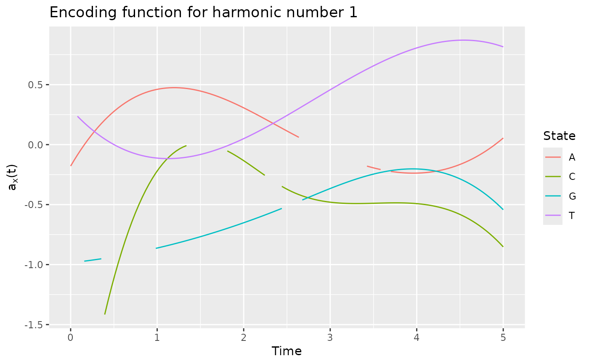

Compute the optimal encoding for categorical functional data using an extension of the multiple correspondence analysis to a stochastic process.
compute_optimal_encoding( data, basisobj, computeCI = TRUE, nBootstrap = 50, propBootstrap = 1, nCores = max(1, ceiling(detectCores()/2)), verbose = TRUE, ... )
Arguments
| data | data.frame containing |
|---|---|
| basisobj | basis created using the |
| computeCI | if TRUE, perform a bootstrap to estimate the variance of encoding's coefficients |
| nBootstrap | number of bootstrap samples |
| propBootstrap | size of bootstrap samples relative to the number of individuals: propBootstrap * number of individuals |
| nCores | number of cores used for parallelization. Default is the half of cores. |
| verbose | if TRUE print some information |
| ... | parameters for |
Value
A list containing:
eigenvalueseigenvaluesalphaoptimal encoding coefficients associated with each eigenvectorspcprincipal componentsFmatrix containing the \(F_{(x,i)(y,j)}\)Vmatrix containing the \(V_{(x,i)}\)Gcovariance matrix ofVbasisobjbasisobjinput parameterinvF05vecelements used to compute principal component scoresbootstrapOnly ifcomputeCI = TRUE. Output of every bootstrap runvarAlphaOnly ifcomputeCI = TRUE. Variance of alpha parameters
Details
See the vignette for the mathematical background: RShowDoc("cfda", package = "cfda")
Extra parameters (...) for the integrate function can be:
subdivisions the maximum number of subintervals.
rel.tol relative accuracy requested.
abs.tol absolute accuracy requested.
References
Deville J.C. (1982) Analyse de données chronologiques qualitatives : comment analyser des calendriers ?, Annales de l'INSEE, No 45, p. 45-104.
Deville J.C. et Saporta G. (1980) Analyse harmonique qualitative, DIDAY et al. (editors), Data Analysis and Informatics, North Holland, p. 375-389.
Saporta G. (1981) Méthodes exploratoires d'analyse de données temporelles, Cahiers du B.U.R.O, Université Pierre et Marie Curie, 37-38, Paris.
See also
Author
Cristian Preda, Quentin Grimonprez
Examples
# Simulate the Jukes-Cantor model of nucleotide replacement K <- 4 Tmax <- 6 PJK <- matrix(1/3, nrow = K, ncol = K) - diag(rep(1/3, K)) lambda_PJK <- c(1, 1, 1, 1) d_JK <- generate_Markov(n = 10, K = K, P = PJK, lambda = lambda_PJK, Tmax = Tmax, labels = c("A", "C", "G", "T")) d_JK2 <- cut_data(d_JK, Tmax) # create basis object m <- 6 b <- create.bspline.basis(c(0, Tmax), nbasis = m, norder = 4) # compute encoding encoding <- compute_optimal_encoding(d_JK2, b, computeCI = FALSE, nCores = 1)#> ######### Compute encoding ######### #> Number of individuals: 10 #> Number of states: 4 #> Basis type: bspline #> Number of basis functions: 6 #> Number of cores: 1 #> ---- Compute V matrix: #> | | | 0% | |======= | 10% | |============== | 20% | |===================== | 30% | |============================ | 40% | |=================================== | 50% | |========================================== | 60% | |================================================= | 70% | |======================================================== | 80% | |=============================================================== | 90% | |======================================================================| 100% #> #> DONE in 0.54s #> ---- Compute U matrix: #> | | | 0% | |======= | 10% | |============== | 20% | |===================== | 30% | |============================ | 40% | |=================================== | 50% | |========================================== | 60% | |================================================= | 70% | |======================================================== | 80% | |=============================================================== | 90% | |======================================================================| 100% #> #> DONE in 3.64s #> ---- Compute encoding: #> DONE in 0s #> Run Time: 4.18s#> $x #> [1] 0.000 0.012 0.024 0.036 0.048 0.060 0.072 0.084 0.096 0.108 0.120 0.132 #> [13] 0.144 0.156 0.168 0.180 0.192 0.204 0.216 0.228 0.240 0.252 0.264 0.276 #> [25] 0.288 0.300 0.312 0.324 0.336 0.348 0.360 0.372 0.384 0.396 0.408 0.420 #> [37] 0.432 0.444 0.456 0.468 0.480 0.492 0.504 0.516 0.528 0.540 0.552 0.564 #> [49] 0.576 0.588 0.600 0.612 0.624 0.636 0.648 0.660 0.672 0.684 0.696 0.708 #> [61] 0.720 0.732 0.744 0.756 0.768 0.780 0.792 0.804 0.816 0.828 0.840 0.852 #> [73] 0.864 0.876 0.888 0.900 0.912 0.924 0.936 0.948 0.960 0.972 0.984 0.996 #> [85] 1.008 1.020 1.032 1.044 1.056 1.068 1.080 1.092 1.104 1.116 1.128 1.140 #> [97] 1.152 1.164 1.176 1.188 1.200 1.212 1.224 1.236 1.248 1.260 1.272 1.284 #> [109] 1.296 1.308 1.320 1.332 1.344 1.356 1.368 1.380 1.392 1.404 1.416 1.428 #> [121] 1.440 1.452 1.464 1.476 1.488 1.500 1.512 1.524 1.536 1.548 1.560 1.572 #> [133] 1.584 1.596 1.608 1.620 1.632 1.644 1.656 1.668 1.680 1.692 1.704 1.716 #> [145] 1.728 1.740 1.752 1.764 1.776 1.788 1.800 1.812 1.824 1.836 1.848 1.860 #> [157] 1.872 1.884 1.896 1.908 1.920 1.932 1.944 1.956 1.968 1.980 1.992 2.004 #> [169] 2.016 2.028 2.040 2.052 2.064 2.076 2.088 2.100 2.112 2.124 2.136 2.148 #> [181] 2.160 2.172 2.184 2.196 2.208 2.220 2.232 2.244 2.256 2.268 2.280 2.292 #> [193] 2.304 2.316 2.328 2.340 2.352 2.364 2.376 2.388 2.400 2.412 2.424 2.436 #> [205] 2.448 2.460 2.472 2.484 2.496 2.508 2.520 2.532 2.544 2.556 2.568 2.580 #> [217] 2.592 2.604 2.616 2.628 2.640 2.652 2.664 2.676 2.688 2.700 2.712 2.724 #> [229] 2.736 2.748 2.760 2.772 2.784 2.796 2.808 2.820 2.832 2.844 2.856 2.868 #> [241] 2.880 2.892 2.904 2.916 2.928 2.940 2.952 2.964 2.976 2.988 3.000 3.012 #> [253] 3.024 3.036 3.048 3.060 3.072 3.084 3.096 3.108 3.120 3.132 3.144 3.156 #> [265] 3.168 3.180 3.192 3.204 3.216 3.228 3.240 3.252 3.264 3.276 3.288 3.300 #> [277] 3.312 3.324 3.336 3.348 3.360 3.372 3.384 3.396 3.408 3.420 3.432 3.444 #> [289] 3.456 3.468 3.480 3.492 3.504 3.516 3.528 3.540 3.552 3.564 3.576 3.588 #> [301] 3.600 3.612 3.624 3.636 3.648 3.660 3.672 3.684 3.696 3.708 3.720 3.732 #> [313] 3.744 3.756 3.768 3.780 3.792 3.804 3.816 3.828 3.840 3.852 3.864 3.876 #> [325] 3.888 3.900 3.912 3.924 3.936 3.948 3.960 3.972 3.984 3.996 4.008 4.020 #> [337] 4.032 4.044 4.056 4.068 4.080 4.092 4.104 4.116 4.128 4.140 4.152 4.164 #> [349] 4.176 4.188 4.200 4.212 4.224 4.236 4.248 4.260 4.272 4.284 4.296 4.308 #> [361] 4.320 4.332 4.344 4.356 4.368 4.380 4.392 4.404 4.416 4.428 4.440 4.452 #> [373] 4.464 4.476 4.488 4.500 4.512 4.524 4.536 4.548 4.560 4.572 4.584 4.596 #> [385] 4.608 4.620 4.632 4.644 4.656 4.668 4.680 4.692 4.704 4.716 4.728 4.740 #> [397] 4.752 4.764 4.776 4.788 4.800 4.812 4.824 4.836 4.848 4.860 4.872 4.884 #> [409] 4.896 4.908 4.920 4.932 4.944 4.956 4.968 4.980 4.992 5.004 5.016 5.028 #> [421] 5.040 5.052 5.064 5.076 5.088 5.100 5.112 5.124 5.136 5.148 5.160 5.172 #> [433] 5.184 5.196 5.208 5.220 5.232 5.244 5.256 5.268 5.280 5.292 5.304 5.316 #> [445] 5.328 5.340 5.352 5.364 5.376 5.388 5.400 5.412 5.424 5.436 5.448 5.460 #> [457] 5.472 5.484 5.496 5.508 5.520 5.532 5.544 5.556 5.568 5.580 5.592 5.604 #> [469] 5.616 5.628 5.640 5.652 5.664 5.676 5.688 5.700 5.712 5.724 5.736 5.748 #> [481] 5.760 5.772 5.784 5.796 5.808 5.820 5.832 5.844 5.856 5.868 5.880 5.892 #> [493] 5.904 5.916 5.928 5.940 5.952 5.964 5.976 5.988 6.000 #> #> $y #> A C G T #> [1,] -0.1979835145 1.530045084 -0.296002927 -0.30273088 #> [2,] -0.1823960569 1.479320690 -0.288751513 -0.31568362 #> [3,] -0.1670662366 1.429487966 -0.281667318 -0.32836898 #> [4,] -0.1519920953 1.380540352 -0.274749151 -0.34078893 #> [5,] -0.1371716747 1.332471289 -0.267995819 -0.35294545 #> [6,] -0.1226030168 1.285274218 -0.261406127 -0.36484052 #> [7,] -0.1082841631 1.238942578 -0.254978885 -0.37647611 #> [8,] -0.0942131554 1.193469811 -0.248712898 -0.38785421 #> [9,] -0.0803880355 1.148849358 -0.242606973 -0.39897679 #> [10,] -0.0668068452 1.105074659 -0.236659919 -0.40984582 #> [11,] -0.0534676263 1.062139154 -0.230870541 -0.42046328 #> [12,] -0.0403684203 1.020036284 -0.225237648 -0.43083115 #> [13,] -0.0275072692 0.978759490 -0.219760046 -0.44095141 #> [14,] -0.0148822147 0.938302213 -0.214436542 -0.45082604 #> [15,] -0.0024912984 0.898657893 -0.209265944 -0.46045700 #> [16,] 0.0096674377 0.859819970 -0.204247059 -0.46984628 #> [17,] 0.0215959520 0.821781886 -0.199378693 -0.47899585 #> [18,] 0.0332962028 0.784537081 -0.194659654 -0.48790770 #> [19,] 0.0447701482 0.748078995 -0.190088749 -0.49658379 #> [20,] 0.0560197465 0.712401070 -0.185664785 -0.50502611 #> [21,] 0.0670469559 0.677496745 -0.181386569 -0.51323663 #> [22,] 0.0778537348 0.643359461 -0.177252909 -0.52121733 #> [23,] 0.0884420413 0.609982660 -0.173262611 -0.52897018 #> [24,] 0.0988138337 0.577359781 -0.169414482 -0.53649717 #> [25,] 0.1089710702 0.545484266 -0.165707331 -0.54380027 #> [26,] 0.1189157091 0.514349554 -0.162139963 -0.55088145 #> [27,] 0.1286497087 0.483949088 -0.158711186 -0.55774269 #> [28,] 0.1381750271 0.454276306 -0.155419807 -0.56438598 #> [29,] 0.1474936226 0.425324650 -0.152264633 -0.57081328 #> [30,] 0.1566074535 0.397087560 -0.149244471 -0.57702657 #> [31,] 0.1655184781 0.369558477 -0.146358129 -0.58302784 #> [32,] 0.1742286545 0.342730842 -0.143604414 -0.58881905 #> [33,] 0.1827399410 0.316598095 -0.140982132 -0.59440219 #> [34,] 0.1910542958 0.291153677 -0.138490090 -0.59977923 #> [35,] 0.1991736772 0.266391029 -0.136127097 -0.60495215 #> [36,] 0.2071000435 0.242303590 -0.133891959 -0.60992292 #> [37,] 0.2148353529 0.218884803 -0.131783482 -0.61469353 #> [38,] 0.2223815636 0.196128106 -0.129800475 -0.61926594 #> [39,] 0.2297406339 0.174026942 -0.127941745 -0.62364214 #> [40,] 0.2369145221 0.152574750 -0.126206098 -0.62782410 #> [41,] 0.2439051863 0.131764971 -0.124592341 -0.63181381 #> [42,] 0.2507145848 0.111591047 -0.123099282 -0.63561322 #> [43,] 0.2573446759 0.092046416 -0.121725728 -0.63922434 #> [44,] 0.2637974178 0.073124521 -0.120470486 -0.64264912 #> [45,] 0.2700747688 0.054818801 -0.119332363 -0.64588955 #> [46,] 0.2761786871 0.037122698 -0.118310166 -0.64894761 #> [47,] 0.2821111309 0.020029652 -0.117402703 -0.65182526 #> [48,] 0.2878740585 0.003533103 -0.116608779 -0.65452450 #> [49,] 0.2934694282 -0.012373508 -0.115927204 -0.65704728 #> [50,] 0.2988991982 -0.027696739 -0.115356783 -0.65939561 #> [51,] 0.3041653267 -0.042443152 -0.114896324 -0.66157144 #> [52,] 0.3092697719 -0.056619304 -0.114544634 -0.66357675 #> [53,] 0.3142144923 -0.070231756 -0.114300519 -0.66541353 #> [54,] 0.3190014458 -0.083287067 -0.114162788 -0.66708375 #> [55,] 0.3236325909 -0.095791795 -0.114130248 -0.66858938 #> [56,] 0.3281098858 -0.107752501 -0.114201704 -0.66993241 #> [57,] 0.3324352887 -0.119175744 -0.114375965 -0.67111480 #> [58,] 0.3366107578 -0.130068084 -0.114651838 -0.67213855 #> [59,] 0.3406382515 -0.140436078 -0.115028130 -0.67300562 #> [60,] 0.3445197279 -0.150286288 -0.115503647 -0.67371798 #> [61,] 0.3482571453 -0.159625273 -0.116077197 -0.67427763 #> [62,] 0.3518524619 -0.168459591 -0.116747588 -0.67468653 #> [63,] 0.3553076361 -0.176795802 -0.117513625 -0.67494667 #> [64,] 0.3586246259 -0.184640465 -0.118374117 -0.67506001 #> [65,] 0.3618053898 -0.192000141 -0.119327871 -0.67502853 #> [66,] 0.3648518858 -0.198881388 -0.120373693 -0.67485422 #> [67,] 0.3677660724 -0.205290766 -0.121510390 -0.67453905 #> [68,] 0.3705499077 -0.211234833 -0.122736771 -0.67408500 #> [69,] 0.3732053499 -0.216720150 -0.124051641 -0.67349404 #> [70,] 0.3757343573 -0.221753276 -0.125453809 -0.67276814 #> [71,] 0.3781388882 -0.226340770 -0.126942080 -0.67190930 #> [72,] 0.3804209008 -0.230489192 -0.128515263 -0.67091948 #> [73,] 0.3825823534 -0.234205100 -0.130172165 -0.66980065 #> [74,] 0.3846252042 -0.237495055 -0.131911592 -0.66855481 #> [75,] 0.3865514114 -0.240365616 -0.133732351 -0.66718392 #> [76,] 0.3883629332 -0.242823341 -0.135633250 -0.66568996 #> [77,] 0.3900617281 -0.244874791 -0.137613097 -0.66407491 #> [78,] 0.3916497541 -0.246526525 -0.139670697 -0.66234075 #> [79,] 0.3931289695 -0.247785102 -0.141804858 -0.66048945 #> [80,] 0.3945013326 -0.248657082 -0.144014388 -0.65852298 #> [81,] 0.3957688016 -0.249149024 -0.146298093 -0.65644334 #> [82,] 0.3969333348 -0.249267487 -0.148654780 -0.65425248 #> [83,] 0.3979968904 -0.249019031 -0.151083257 -0.65195240 #> [84,] 0.3989614267 -0.248410215 -0.153582331 -0.64954506 #> [85,] 0.3998289018 -0.247447598 -0.156150808 -0.64703244 #> [86,] 0.4006012741 -0.246137741 -0.158787497 -0.64441653 #> [87,] 0.4012805018 -0.244487201 -0.161491204 -0.64169929 #> [88,] 0.4018685432 -0.242502540 -0.164260736 -0.63888271 #> [89,] 0.4023673564 -0.240190315 -0.167094900 -0.63596876 #> [90,] 0.4027788998 -0.237557087 -0.169992503 -0.63295941 #> [91,] 0.4031051315 -0.234609414 -0.172952353 -0.62985665 #> [92,] 0.4033480099 -0.231353857 -0.175973257 -0.62666245 #> [93,] 0.4035094931 -0.227796974 -0.179054022 -0.62337880 #> [94,] 0.4035915395 -0.223945325 -0.182193455 -0.62000765 #> [95,] 0.4035961072 -0.219805469 -0.185390362 -0.61655100 #> [96,] 0.4035251546 -0.215383966 -0.188643552 -0.61301082 #> [97,] 0.4033806397 -0.210687375 -0.191951831 -0.60938909 #> [98,] 0.4031645210 -0.205722256 -0.195314006 -0.60568777 #> [99,] 0.4028787567 -0.200495167 -0.198728885 -0.60190886 #> [100,] 0.4025253049 -0.195012668 -0.202195275 -0.59805433 #> [101,] 0.4021061240 -0.189281319 -0.205711982 -0.59412615 #> [102,] 0.4016231722 -0.183307680 -0.209277814 -0.59012630 #> [103,] 0.4010784077 -0.177098308 -0.212891579 -0.58605676 #> [104,] 0.4004737888 -0.170659764 -0.216552082 -0.58191950 #> [105,] 0.3998112737 -0.163998607 -0.220258131 -0.57771650 #> [106,] 0.3990928206 -0.157121397 -0.224008534 -0.57344975 #> [107,] 0.3983203879 -0.150034692 -0.227802098 -0.56912120 #> [108,] 0.3974959338 -0.142745053 -0.231637629 -0.56473285 #> [109,] 0.3966214165 -0.135259038 -0.235513934 -0.56028667 #> [110,] 0.3956987942 -0.127583208 -0.239429822 -0.55578464 #> [111,] 0.3947300252 -0.119724120 -0.243384098 -0.55122873 #> [112,] 0.3937170678 -0.111688336 -0.247375571 -0.54662091 #> [113,] 0.3926618801 -0.103482413 -0.251403046 -0.54196318 #> [114,] 0.3915664205 -0.095112912 -0.255465332 -0.53725750 #> [115,] 0.3904326472 -0.086586392 -0.259561236 -0.53250585 #> [116,] 0.3892625185 -0.077909412 -0.263689564 -0.52771020 #> [117,] 0.3880579925 -0.069088532 -0.267849123 -0.52287255 #> [118,] 0.3868210275 -0.060130311 -0.272038722 -0.51799485 #> [119,] 0.3855535818 -0.051041308 -0.276257166 -0.51307909 #> [120,] 0.3842576136 -0.041828083 -0.280503263 -0.50812724 #> [121,] 0.3829350812 -0.032497196 -0.284775821 -0.50314129 #> [122,] 0.3815879428 -0.023055204 -0.289073646 -0.49812321 #> [123,] 0.3802181566 -0.013508669 -0.293395545 -0.49307497 #> [124,] 0.3788276809 -0.003864149 -0.297740325 -0.48799856 #> [125,] 0.3774184740 0.005871796 -0.302106795 -0.48289594 #> [126,] 0.3759924941 0.015692607 -0.306493759 -0.47776910 #> [127,] 0.3745516994 0.025591725 -0.310900027 -0.47262002 #> [128,] 0.3730980482 0.035562590 -0.315324405 -0.46745066 #> [129,] 0.3716334988 0.045598643 -0.319765700 -0.46226301 #> [130,] 0.3701600093 0.055693324 -0.324222719 -0.45705905 #> [131,] 0.3686795380 0.065840074 -0.328694269 -0.45184075 #> [132,] 0.3671940432 0.076032334 -0.333179158 -0.44661008 #> [133,] 0.3657054831 0.086263545 -0.337676193 -0.44136903 #> [134,] 0.3642158160 0.096527146 -0.342184180 -0.43611957 #> [135,] 0.3627270001 0.106816578 -0.346701927 -0.43086369 #> [136,] 0.3612409937 0.117125283 -0.351228241 -0.42560334 #> [137,] 0.3597597549 0.127446701 -0.355761929 -0.42034052 #> [138,] 0.3582852421 0.137774271 -0.360301798 -0.41507720 #> [139,] 0.3568194135 0.148101436 -0.364846655 -0.40981535 #> [140,] 0.3553642273 0.158421636 -0.369395308 -0.40455696 #> [141,] 0.3539216418 0.168728311 -0.373946563 -0.39930400 #> [142,] 0.3524936152 0.179014901 -0.378499228 -0.39405844 #> [143,] 0.3510821059 0.189274848 -0.383052110 -0.38882227 #> [144,] 0.3496890719 0.199501593 -0.387604016 -0.38359746 #> [145,] 0.3483164716 0.209688575 -0.392153752 -0.37838598 #> [146,] 0.3469662632 0.219829235 -0.396700127 -0.37318983 #> [147,] 0.3456404050 0.229917014 -0.401241947 -0.36801096 #> [148,] 0.3443408552 0.239945353 -0.405778020 -0.36285136 #> [149,] 0.3430695720 0.249907692 -0.410307151 -0.35771301 #> [150,] 0.3418285138 0.259797472 -0.414828150 -0.35259787 #> [151,] 0.3406196387 0.269608133 -0.419339822 -0.34750794 #> [152,] 0.3394449049 0.279333117 -0.423840975 -0.34244519 #> [153,] 0.3383062709 0.288965863 -0.428330416 -0.33741158 #> [154,] 0.3372056947 0.298499812 -0.432806952 -0.33240911 #> [155,] 0.3361451346 0.307928406 -0.437269390 -0.32743974 #> [156,] 0.3351265489 0.317245084 -0.441716538 -0.32250546 #> [157,] 0.3341518958 0.326443287 -0.446147202 -0.31760824 #> [158,] 0.3332231336 0.335516455 -0.450560190 -0.31275005 #> [159,] 0.3323422205 0.344458031 -0.454954308 -0.30793288 #> [160,] 0.3315111148 0.353261453 -0.459328364 -0.30315870 #> [161,] 0.3307317747 0.361920163 -0.463681165 -0.29842949 #> [162,] 0.3300061584 0.370427601 -0.468011518 -0.29374722 #> [163,] 0.3293362242 0.378777208 -0.472318230 -0.28911388 #> [164,] 0.3287239304 0.386962425 -0.476600108 -0.28453143 #> [165,] 0.3281712351 0.394976692 -0.480855960 -0.28000186 #> [166,] 0.3276800967 0.402813449 -0.485084593 -0.27552714 #> [167,] 0.3272524734 0.410466138 -0.489284813 -0.27110926 #> [168,] 0.3268903050 0.417928251 -0.493455433 -0.26675016 #> [169,] 0.3265944266 0.425196398 -0.497595596 -0.26245102 #> [170,] 0.3263639606 0.432272022 -0.501704955 -0.25821177 #> [171,] 0.3261978825 0.439156982 -0.505783208 -0.25403222 #> [172,] 0.3260951676 0.445853137 -0.509830052 -0.24991219 #> [173,] 0.3260547910 0.452362344 -0.513845186 -0.24585150 #> [174,] 0.3260757281 0.458686462 -0.517828306 -0.24184997 #> [175,] 0.3261569542 0.464827351 -0.521779111 -0.23790742 #> [176,] 0.3262974445 0.470786868 -0.525697297 -0.23402366 #> [177,] 0.3264961744 0.476566872 -0.529582563 -0.23019852 #> [178,] 0.3267521191 0.482169222 -0.533434605 -0.22643182 #> [179,] 0.3270642540 0.487595776 -0.537253123 -0.22272338 #> [180,] 0.3274315542 0.492848393 -0.541037812 -0.21907301 #> [181,] 0.3278529951 0.497928931 -0.544788372 -0.21548053 #> [182,] 0.3283275520 0.502839249 -0.548504499 -0.21194576 #> [183,] 0.3288542002 0.507581206 -0.552185891 -0.20846852 #> [184,] 0.3294319149 0.512156659 -0.555832245 -0.20504864 #> [185,] 0.3300596714 0.516567468 -0.559443259 -0.20168593 #> [186,] 0.3307364451 0.520815491 -0.563018632 -0.19838020 #> [187,] 0.3314612111 0.524902587 -0.566558060 -0.19513128 #> [188,] 0.3322329449 0.528830615 -0.570061240 -0.19193899 #> [189,] 0.3330506216 0.532601432 -0.573527871 -0.18880314 #> [190,] 0.3339132166 0.536216897 -0.576957651 -0.18572356 #> [191,] 0.3348197052 0.539678870 -0.580350276 -0.18270007 #> [192,] 0.3357690626 0.542989208 -0.583705444 -0.17973247 #> [193,] 0.3367602641 0.546149770 -0.587022853 -0.17682060 #> [194,] 0.3377922850 0.549162414 -0.590302201 -0.17396427 #> [195,] 0.3388641006 0.552029000 -0.593543185 -0.17116330 #> [196,] 0.3399746862 0.554751386 -0.596745503 -0.16841751 #> [197,] 0.3411230171 0.557331430 -0.599908852 -0.16572672 #> [198,] 0.3423080685 0.559770991 -0.603032929 -0.16309075 #> [199,] 0.3435288157 0.562071927 -0.606117434 -0.16050942 #> [200,] 0.3447842341 0.564236097 -0.609162062 -0.15798254 #> [201,] 0.3460732989 0.566265360 -0.612166512 -0.15550993 #> [202,] 0.3473949854 0.568161574 -0.615130481 -0.15309142 #> [203,] 0.3487482689 0.569926598 -0.618053667 -0.15072682 #> [204,] 0.3501321246 0.571562290 -0.620935768 -0.14841596 #> [205,] 0.3515455279 0.573070509 -0.623776480 -0.14615865 #> [206,] 0.3529874541 0.574453113 -0.626575502 -0.14395470 #> [207,] 0.3544568783 0.575711961 -0.629332532 -0.14180395 #> [208,] 0.3559527760 0.576848912 -0.632047266 -0.13970621 #> [209,] 0.3574741224 0.577865824 -0.634719402 -0.13766129 #> [210,] 0.3590198928 0.578764555 -0.637348639 -0.13566902 #> [211,] 0.3605890624 0.579546965 -0.639934673 -0.13372922 #> [212,] 0.3621806066 0.580214911 -0.642477202 -0.13184170 #> [213,] 0.3637935007 0.580770253 -0.644975924 -0.13000628 #> [214,] 0.3654267199 0.581214848 -0.647430537 -0.12822279 #> [215,] 0.3670792395 0.581550556 -0.649840737 -0.12649104 #> [216,] 0.3687500348 0.581779235 -0.652206223 -0.12481086 #> [217,] 0.3704380811 0.581902744 -0.654526692 -0.12318205 #> [218,] 0.3721423537 0.581922941 -0.656801842 -0.12160444 #> [219,] 0.3738618278 0.581841684 -0.659031370 -0.12007786 #> [220,] 0.3755954788 0.581660833 -0.661214974 -0.11860211 #> [221,] 0.3773422819 0.581382245 -0.663352351 -0.11717701 #> [222,] 0.3791012125 0.581007780 -0.665443200 -0.11580240 #> [223,] 0.3808712457 0.580539296 -0.667487217 -0.11447808 #> [224,] 0.3826513570 0.579978651 -0.669484101 -0.11320387 #> [225,] 0.3844405215 0.579327704 -0.671433548 -0.11197959 #> [226,] 0.3862377146 0.578588314 -0.673335257 -0.11080507 #> [227,] 0.3880419115 0.577762339 -0.675188925 -0.10968012 #> [228,] 0.3898520876 0.576851638 -0.676994250 -0.10860456 #> [229,] 0.3916672181 0.575858070 -0.678750929 -0.10757821 #> [230,] 0.3934862783 0.574783492 -0.680458659 -0.10660089 #> [231,] 0.3953082435 0.573629763 -0.682117139 -0.10567242 #> [232,] 0.3971320890 0.572398743 -0.683726067 -0.10479261 #> [233,] 0.3989567901 0.571092289 -0.685285138 -0.10396129 #> [234,] 0.4007813220 0.569712260 -0.686794052 -0.10317828 #> [235,] 0.4026046601 0.568260515 -0.688252506 -0.10244339 #> [236,] 0.4044257796 0.566738912 -0.689660197 -0.10175644 #> [237,] 0.4062436558 0.565149310 -0.691016824 -0.10111726 #> [238,] 0.4080572640 0.563493567 -0.692322082 -0.10052566 #> [239,] 0.4098655795 0.561773542 -0.693575671 -0.09998145 #> [240,] 0.4116675775 0.559991094 -0.694777288 -0.09948447 #> [241,] 0.4134622334 0.558148081 -0.695926630 -0.09903453 #> [242,] 0.4152485225 0.556246361 -0.697023395 -0.09863144 #> [243,] 0.4170254200 0.554287793 -0.698067281 -0.09827503 #> [244,] 0.4187919012 0.552274237 -0.699057984 -0.09796512 #> [245,] 0.4205469414 0.550207549 -0.699995204 -0.09770152 #> [246,] 0.4222895159 0.548089590 -0.700878637 -0.09748406 #> [247,] 0.4240186000 0.545922217 -0.701707980 -0.09731255 #> [248,] 0.4257331689 0.543707288 -0.702482932 -0.09718682 #> [249,] 0.4274321980 0.541446664 -0.703203191 -0.09710667 #> [250,] 0.4291146625 0.539142201 -0.703868453 -0.09707194 #> [251,] 0.4307795378 0.536795760 -0.704478416 -0.09708243 #> [252,] 0.4324257990 0.534409197 -0.705032778 -0.09713798 #> [253,] 0.4340524216 0.531984372 -0.705531237 -0.09723839 #> [254,] 0.4356583807 0.529523144 -0.705973489 -0.09738349 #> [255,] 0.4372426517 0.527027370 -0.706359234 -0.09757309 #> [256,] 0.4388042098 0.524498910 -0.706688167 -0.09780702 #> [257,] 0.4403420304 0.521939622 -0.706959988 -0.09808510 #> [258,] 0.4418550886 0.519351365 -0.707174392 -0.09840714 #> [259,] 0.4433423599 0.516735996 -0.707331079 -0.09877296 #> [260,] 0.4448028195 0.514095376 -0.707429746 -0.09918238 #> [261,] 0.4462354427 0.511431362 -0.707470089 -0.09963522 #> [262,] 0.4476392048 0.508745812 -0.707451808 -0.10013131 #> [263,] 0.4490130810 0.506040586 -0.707374599 -0.10067045 #> [264,] 0.4503560466 0.503317542 -0.707238159 -0.10125247 #> [265,] 0.4516670770 0.500578539 -0.707042188 -0.10187719 #> [266,] 0.4529451473 0.497825435 -0.706786381 -0.10254442 #> [267,] 0.4541892330 0.495060088 -0.706470438 -0.10325399 #> [268,] 0.4553983093 0.492284358 -0.706094055 -0.10400571 #> [269,] 0.4565713514 0.489500102 -0.705656929 -0.10479941 #> [270,] 0.4577073347 0.486709180 -0.705158759 -0.10563490 #> [271,] 0.4588052344 0.483913449 -0.704599243 -0.10651200 #> [272,] 0.4598640259 0.481114769 -0.703978077 -0.10743053 #> [273,] 0.4608826843 0.478314998 -0.703294959 -0.10839032 #> [274,] 0.4618601851 0.475515995 -0.702549587 -0.10939117 #> [275,] 0.4627955035 0.472719618 -0.701741659 -0.11043291 #> [276,] 0.4636876147 0.469927725 -0.700870872 -0.11151535 #> [277,] 0.4645354941 0.467142176 -0.699936924 -0.11263832 #> [278,] 0.4653381169 0.464364829 -0.698939512 -0.11380164 #> [279,] 0.4660944585 0.461597542 -0.697878333 -0.11500512 #> [280,] 0.4668034941 0.458842174 -0.696753087 -0.11624859 #> [281,] 0.4674641990 0.456100584 -0.695563469 -0.11753186 #> [282,] 0.4680755485 0.453374629 -0.694309178 -0.11885475 #> [283,] 0.4686365178 0.450666170 -0.692989911 -0.12021708 #> [284,] 0.4691460824 0.447977063 -0.691605366 -0.12161867 #> [285,] 0.4696032173 0.445309169 -0.690155240 -0.12305934 #> [286,] 0.4700068980 0.442664344 -0.688639232 -0.12453891 #> [287,] 0.4703560998 0.440044449 -0.687057038 -0.12605719 #> [288,] 0.4706497978 0.437451341 -0.685408356 -0.12761401 #> [289,] 0.4708869674 0.434886879 -0.683692884 -0.12920919 #> [290,] 0.4710665840 0.432352921 -0.681910320 -0.13084254 #> [291,] 0.4711876226 0.429851327 -0.680060360 -0.13251388 #> [292,] 0.4712490588 0.427383955 -0.678142703 -0.13422304 #> [293,] 0.4712498676 0.424952662 -0.676157046 -0.13596983 #> [294,] 0.4711890245 0.422559309 -0.674103087 -0.13775407 #> [295,] 0.4710655047 0.420205753 -0.671980524 -0.13957558 #> [296,] 0.4708782835 0.417893853 -0.669789053 -0.14143418 #> [297,] 0.4706263362 0.415625467 -0.667528373 -0.14332969 #> [298,] 0.4703086381 0.413402455 -0.665198181 -0.14526192 #> [299,] 0.4699241644 0.411226674 -0.662798174 -0.14723070 #> [300,] 0.4694718904 0.409099983 -0.660328051 -0.14923585 #> [301,] 0.4689507915 0.407024242 -0.657787509 -0.15127718 #> [302,] 0.4683598429 0.405001307 -0.655176246 -0.15335451 #> [303,] 0.4676980199 0.403033038 -0.652493958 -0.15546767 #> [304,] 0.4669642978 0.401121294 -0.649740344 -0.15761647 #> [305,] 0.4661576518 0.399267933 -0.646915102 -0.15980073 #> [306,] 0.4652770573 0.397474813 -0.644017928 -0.16202027 #> [307,] 0.4643214896 0.395743794 -0.641048521 -0.16427491 #> [308,] 0.4632899239 0.394076733 -0.638006578 -0.16656446 #> [309,] 0.4621813355 0.392475490 -0.634891796 -0.16888876 #> [310,] 0.4609946997 0.390941922 -0.631703874 -0.17124761 #> [311,] 0.4597289917 0.389477889 -0.628442509 -0.17364083 #> [312,] 0.4583831870 0.388085248 -0.625107398 -0.17606825 #> [313,] 0.4569562607 0.386765860 -0.621698239 -0.17852969 #> [314,] 0.4554471882 0.385521581 -0.618214729 -0.18102495 #> [315,] 0.4538549447 0.384354271 -0.614656567 -0.18355387 #> [316,] 0.4521785056 0.383265788 -0.611023450 -0.18611626 #> [317,] 0.4504168460 0.382257990 -0.607315075 -0.18871194 #> [318,] 0.4485689413 0.381332738 -0.603531140 -0.19134073 #> [319,] 0.4466337668 0.380491888 -0.599671343 -0.19400245 #> [320,] 0.4446102978 0.379737299 -0.595735380 -0.19669691 #> [321,] 0.4424975095 0.379070830 -0.591722951 -0.19942394 #> [322,] 0.4402943773 0.378494340 -0.587633752 -0.20218336 #> [323,] 0.4379998764 0.378009688 -0.583467481 -0.20497498 #> [324,] 0.4356129821 0.377618730 -0.579223835 -0.20779862 #> [325,] 0.4331326696 0.377323328 -0.574902513 -0.21065411 #> [326,] 0.4305579144 0.377125337 -0.570503211 -0.21354126 #> [327,] 0.4278876917 0.377026619 -0.566025627 -0.21645989 #> [328,] 0.4251209766 0.377029030 -0.561469460 -0.21940982 #> [329,] 0.4222567447 0.377134430 -0.556834406 -0.22239087 #> [330,] 0.4192939710 0.377344676 -0.552120163 -0.22540285 #> [331,] 0.4162316310 0.377661629 -0.547326429 -0.22844560 #> [332,] 0.4130686999 0.378087145 -0.542452901 -0.23151892 #> [333,] 0.4098041529 0.378623085 -0.537499276 -0.23462264 #> [334,] 0.4064369654 0.379271305 -0.532465254 -0.23775657 #> [335,] 0.4029662864 0.380033438 -0.527350648 -0.24092055 #> [336,] 0.3993932833 0.380908468 -0.522156643 -0.24411455 #> [337,] 0.3957204264 0.381893673 -0.516885306 -0.24733867 #> [338,] 0.3919502071 0.382986303 -0.511538718 -0.25059297 #> [339,] 0.3880851174 0.384183606 -0.506118961 -0.25387754 #> [340,] 0.3841276489 0.385482832 -0.500628118 -0.25719246 #> [341,] 0.3800802934 0.386881231 -0.495068268 -0.26053781 #> [342,] 0.3759455424 0.388376052 -0.489441496 -0.26391367 #> [343,] 0.3717258879 0.389964544 -0.483749881 -0.26732013 #> [344,] 0.3674238214 0.391643956 -0.477995506 -0.27075725 #> [345,] 0.3630418348 0.393411539 -0.472180453 -0.27422513 #> [346,] 0.3585824197 0.395264541 -0.466306803 -0.27772384 #> [347,] 0.3540480678 0.397200211 -0.460376637 -0.28125346 #> [348,] 0.3494412709 0.399215800 -0.454392039 -0.28481408 #> [349,] 0.3447645207 0.401308556 -0.448355088 -0.28840577 #> [350,] 0.3400203089 0.403475729 -0.442267868 -0.29202861 #> [351,] 0.3352111273 0.405714568 -0.436132459 -0.29568270 #> [352,] 0.3303394675 0.408022323 -0.429950944 -0.29936810 #> [353,] 0.3254078212 0.410396242 -0.423725405 -0.30308489 #> [354,] 0.3204186803 0.412833576 -0.417457922 -0.30683316 #> [355,] 0.3153745363 0.415331574 -0.411150577 -0.31061300 #> [356,] 0.3102778811 0.417887485 -0.404805453 -0.31442447 #> [357,] 0.3051312064 0.420498558 -0.398424631 -0.31826765 #> [358,] 0.2999370038 0.423162043 -0.392010193 -0.32214264 #> [359,] 0.2946977651 0.425875189 -0.385564220 -0.32604951 #> [360,] 0.2894159820 0.428635246 -0.379088795 -0.32998834 #> [361,] 0.2840941462 0.431439462 -0.372585998 -0.33395921 #> [362,] 0.2787347495 0.434285088 -0.366057912 -0.33796221 #> [363,] 0.2733402836 0.437169372 -0.359506618 -0.34199740 #> [364,] 0.2679132401 0.440089565 -0.352934198 -0.34606488 #> [365,] 0.2624561109 0.443042915 -0.346342734 -0.35016473 #> [366,] 0.2569713876 0.446026672 -0.339734308 -0.35429702 #> [367,] 0.2514615619 0.449038084 -0.333111001 -0.35846183 #> [368,] 0.2459291256 0.452074403 -0.326474894 -0.36265925 #> [369,] 0.2403765704 0.455132876 -0.319828070 -0.36688935 #> [370,] 0.2348063880 0.458210753 -0.313172611 -0.37115222 #> [371,] 0.2292210702 0.461305285 -0.306510597 -0.37544794 #> [372,] 0.2236231086 0.464413719 -0.299844111 -0.37977659 #> [373,] 0.2180149949 0.467533305 -0.293175235 -0.38413824 #> [374,] 0.2123992209 0.470661293 -0.286506050 -0.38853299 #> [375,] 0.2067782784 0.473794933 -0.279838638 -0.39296090 #> [376,] 0.2011546590 0.476931472 -0.273175080 -0.39742206 #> [377,] 0.1955308544 0.480068162 -0.266517459 -0.40191656 #> [378,] 0.1899093564 0.483202251 -0.259867855 -0.40644446 #> [379,] 0.1842926567 0.486330988 -0.253228352 -0.41100586 #> [380,] 0.1786832469 0.489451624 -0.246601029 -0.41560083 #> [381,] 0.1730836190 0.492561406 -0.239987970 -0.42022945 #> [382,] 0.1674962644 0.495657586 -0.233391256 -0.42489181 #> [383,] 0.1619236751 0.498737411 -0.226812969 -0.42958798 #> [384,] 0.1563683426 0.501798132 -0.220255189 -0.43431804 #> [385,] 0.1508327587 0.504836998 -0.213720000 -0.43908208 #> [386,] 0.1453194151 0.507851258 -0.207209483 -0.44388018 #> [387,] 0.1398308036 0.510838161 -0.200725719 -0.44871241 #> [388,] 0.1343694159 0.513794958 -0.194270790 -0.45357886 #> [389,] 0.1289377437 0.516718896 -0.187846778 -0.45847961 #> [390,] 0.1235382786 0.519607227 -0.181455764 -0.46341474 #> [391,] 0.1181735125 0.522457198 -0.175099831 -0.46838432 #> [392,] 0.1128459370 0.525266060 -0.168781060 -0.47338844 #> [393,] 0.1075580439 0.528031062 -0.162501532 -0.47842719 #> [394,] 0.1023123249 0.530749452 -0.156263330 -0.48350063 #> [395,] 0.0971112717 0.533418482 -0.150068535 -0.48860886 #> [396,] 0.0919573760 0.536035399 -0.143919229 -0.49375194 #> [397,] 0.0868531296 0.538597453 -0.137817494 -0.49892997 #> [398,] 0.0818010241 0.541101894 -0.131765411 -0.50414302 #> [399,] 0.0768035514 0.543545971 -0.125765061 -0.50939118 #> [400,] 0.0718632030 0.545926934 -0.119818528 -0.51467452 #> [401,] 0.0669824707 0.548242031 -0.113927892 -0.51999312 #> [402,] 0.0621638463 0.550488512 -0.108095235 -0.52534707 #> [403,] 0.0574098215 0.552663627 -0.102322639 -0.53073645 #> [404,] 0.0527228879 0.554764625 -0.096612185 -0.53616133 #> [405,] 0.0481055374 0.556788755 -0.090965956 -0.54162180 #> [406,] 0.0435602615 0.558733266 -0.085386033 -0.54711793 #> [407,] 0.0390895522 0.560595409 -0.079874497 -0.55264981 #> [408,] 0.0346959009 0.562372432 -0.074433431 -0.55821753 #> [409,] 0.0303817996 0.564061584 -0.069064916 -0.56382115 #> [410,] 0.0261497399 0.565660116 -0.063771034 -0.56946076 #> [411,] 0.0220022135 0.567165276 -0.058553866 -0.57513644 #> [412,] 0.0179417121 0.568574314 -0.053415495 -0.58084827 #> [413,] 0.0139707275 0.569884479 -0.048358002 -0.58659633 #> [414,] 0.0100917514 0.571093021 -0.043383468 -0.59238071 #> [415,] 0.0063072755 0.572197189 -0.038493976 -0.59820147 #> [416,] 0.0026197915 0.573194232 -0.033691607 -0.60405872 #> [417,] -0.0009682088 0.574081399 -0.028978442 -0.60995251 #> [418,] -0.0044542338 0.574855941 -0.024356564 -0.61588294 #> [419,] -0.0078357917 0.575515106 -0.019828055 -0.62185008 #> [420,] -0.0111103907 0.576056144 -0.015394995 -0.62785402 #> [421,] -0.0142755393 0.576476304 -0.011059468 -0.63389484 #> [422,] -0.0173287456 0.576772836 -0.006823553 -0.63997261 #> [423,] -0.0202675180 0.576942988 -0.002689334 -0.64608742 #> [424,] -0.0230893646 0.576984011 0.001341109 -0.65223934 #> [425,] -0.0257917939 0.576893154 0.005265692 -0.65842847 #> [426,] -0.0283723140 0.576667665 0.009082336 -0.66465487 #> [427,] -0.0308284333 0.576304795 0.012788958 -0.67091864 #> [428,] -0.0331576601 0.575801793 0.016383476 -0.67721984 #> [429,] -0.0353575025 0.575155908 0.019863809 -0.68355856 #> [430,] -0.0374254690 0.574364389 0.023227874 -0.68993489 #> [431,] -0.0393590677 0.573424486 0.026473591 -0.69634890 #> [432,] -0.0411558070 0.572333449 0.029598877 -0.70280067 #> [433,] -0.0428131951 0.571088526 0.032601651 -0.70929028 #> [434,] -0.0443287404 0.569686967 0.035479831 -0.71581782 #> [435,] -0.0456999510 0.568126021 0.038231335 -0.72238336 #> [436,] -0.0469243353 0.566402939 0.040854082 -0.72898698 #> [437,] -0.0479994016 0.564514968 0.043345990 -0.73562877 #> [438,] -0.0489226581 0.562459359 0.045704977 -0.74230881 #> [439,] -0.0496916132 0.560233360 0.047928961 -0.74902717 #> [440,] -0.0503037750 0.557834222 0.050015862 -0.75578394 #> [441,] -0.0507566519 0.555259193 0.051963596 -0.76257919 #> [442,] -0.0510477522 0.552505524 0.053770083 -0.76941302 #> [443,] -0.0511745841 0.549570463 0.055433240 -0.77628549 #> [444,] -0.0511346559 0.546451259 0.056950986 -0.78319669 #> [445,] -0.0509254759 0.543145162 0.058321239 -0.79014671 #> [446,] -0.0505445524 0.539649422 0.059541918 -0.79713561 #> [447,] -0.0499893937 0.535961288 0.060610941 -0.80416348 #> [448,] -0.0492575080 0.532078009 0.061526225 -0.81123041 #> [449,] -0.0483464036 0.527996834 0.062285690 -0.81833647 #> [450,] -0.0472535888 0.523715014 0.062887254 -0.82548174 #> [451,] -0.0459765719 0.519229796 0.063328834 -0.83266630 #> [452,] -0.0445128612 0.514538432 0.063608350 -0.83989024 #> [453,] -0.0428599649 0.509638169 0.063723719 -0.84715363 #> [454,] -0.0410153913 0.504526258 0.063672860 -0.85445656 #> [455,] -0.0389766487 0.499199948 0.063453692 -0.86179910 #> [456,] -0.0367412454 0.493656487 0.063064131 -0.86918134 #> [457,] -0.0343066897 0.487893127 0.062502097 -0.87660336 #> [458,] -0.0316704898 0.481907115 0.061765508 -0.88406523 #> [459,] -0.0288301540 0.475695701 0.060852282 -0.89156704 #> [460,] -0.0257831906 0.469256135 0.059760338 -0.89910887 #> [461,] -0.0225271079 0.462585666 0.058487593 -0.90669080 #> [462,] -0.0190594141 0.455681544 0.057031967 -0.91431291 #> [463,] -0.0153776176 0.448541017 0.055391377 -0.92197527 #> [464,] -0.0114792267 0.441161335 0.053563741 -0.92967798 #> [465,] -0.0073617495 0.433539748 0.051546979 -0.93742111 #> [466,] -0.0030226944 0.425673505 0.049339007 -0.94520474 #> [467,] 0.0015404304 0.417559855 0.046937745 -0.95302896 #> [468,] 0.0063301164 0.409196047 0.044341111 -0.96089384 #> [469,] 0.0113488556 0.400579332 0.041547023 -0.96879946 #> [470,] 0.0165991396 0.391706958 0.038553400 -0.97674590 #> [471,] 0.0220834601 0.382576174 0.035358159 -0.98473326 #> [472,] 0.0278043088 0.373184231 0.031959219 -0.99276159 #> [473,] 0.0337641775 0.363528377 0.028354498 -1.00083099 #> [474,] 0.0399655579 0.353605862 0.024541915 -1.00894154 #> [475,] 0.0464109416 0.343413935 0.020519387 -1.01709332 #> [476,] 0.0531028205 0.332949846 0.016284834 -1.02528640 #> [477,] 0.0600436863 0.322210843 0.011836173 -1.03352087 #> [478,] 0.0672360305 0.311194177 0.007171323 -1.04179681 #> [479,] 0.0746823451 0.299897097 0.002288201 -1.05011430 #> [480,] 0.0823851216 0.288316852 -0.002815273 -1.05847342 #> [481,] 0.0903468519 0.276450691 -0.008141182 -1.06687425 #> [482,] 0.0985700276 0.264295864 -0.013691606 -1.07531687 #> [483,] 0.1070571405 0.251849620 -0.019468629 -1.08380137 #> [484,] 0.1158106822 0.239109208 -0.025474332 -1.09232781 #> [485,] 0.1248331446 0.226071879 -0.031710795 -1.10089629 #> [486,] 0.1341270192 0.212734881 -0.038180102 -1.10950688 #> [487,] 0.1436947979 0.199095463 -0.044884334 -1.11815967 #> [488,] 0.1535389724 0.185150876 -0.051825572 -1.12685473 #> [489,] 0.1636620343 0.170898368 -0.059005898 -1.13559214 #> [490,] 0.1740664754 0.156335188 -0.066427394 -1.14437199 #> [491,] 0.1847547875 0.141458587 -0.074092142 -1.15319436 #> [492,] 0.1957294622 0.126265813 -0.082002223 -1.16205932 #> [493,] 0.2069929912 0.110754116 -0.090159719 -1.17096697 #> [494,] 0.2185478663 0.094920746 -0.098566712 -1.17991737 #> [495,] 0.2303965792 0.078762951 -0.107225283 -1.18891060 #> [496,] 0.2425416216 0.062277981 -0.116137514 -1.19794676 #> [497,] 0.2549854853 0.045463085 -0.125305488 -1.20702592 #> [498,] 0.2677306619 0.028315514 -0.134731285 -1.21614816 #> [499,] 0.2807796432 0.010832515 -0.144416987 -1.22531356 #> [500,] 0.2941349209 -0.006988662 -0.154364676 -1.23452220 #> [501,] 0.3077989867 -0.025150766 -0.164576434 -1.24377416 #>